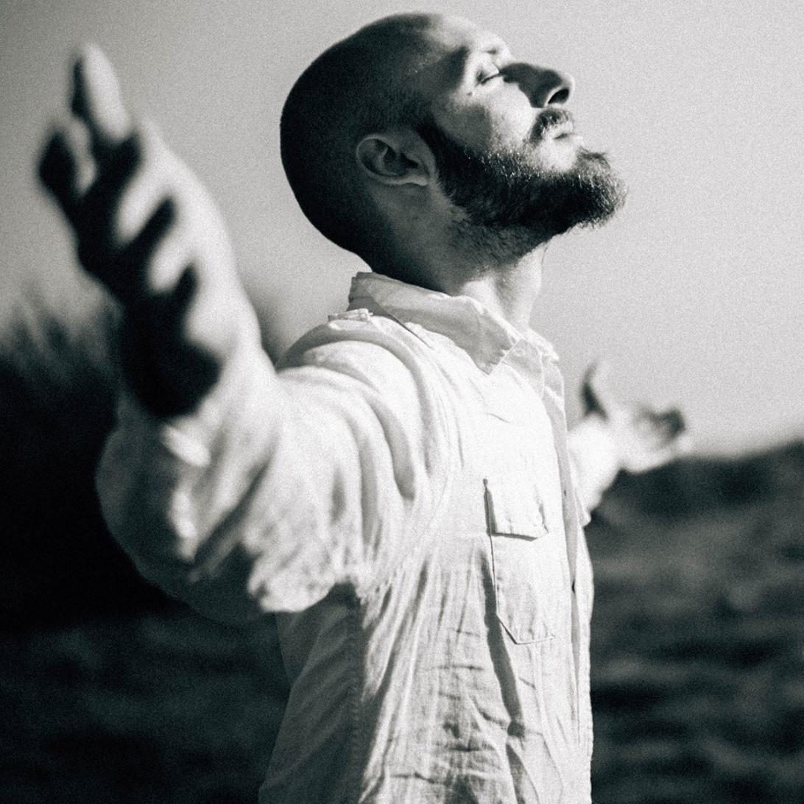

Chittarista, fotografo, amante della natura e del viaggio.
L'ispirazione, sembra arrivare dalla natura dove sono stati creati 5 brani per il primo
EP "Let this Fire Burn", pubblicato nel 2018 assieme a un bel contorno ricco di video backstage,
interviste e fotografie.
Il 12 luglio viene pubblicato il primo video ufficiale "Find your Universe", pronto a condividere
e ricordare un messaggio di abbandono della società moderna per tornare alle proprie radici, dove
natura e musica vanno di pari passo e si incotrano in un viaggio con colori, rituali simbolici e madre natura.
...Godi il presente, respira e troverai il tuo universo...